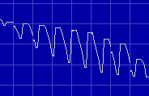
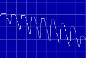
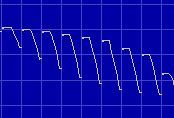
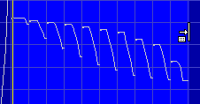
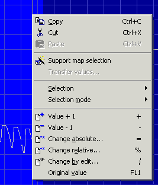

|
Manually find maps (2d mode) |

  
|
|
Manually find maps (2d mode) |
|
Finding maps in 2d mode is similar to finding them in text mode. Start the same way as above by configuring the view parameters (8 Bit, 16 Bit, ... / HiLo, LoHi) and then scroll through the file until you find a possible map. (Remember that you can change the X and Y zoom factors with the menu bar “Frame: View” or Ctrl+Mousewheel.)
If you found a possible map, you should start by setting the right number of columns. In 2d-Mode the “line breaks” will be symbolized by vertical lines, but you can configure this in the configuration (page View, in the 2d-Range).
Change the number of columns so that the vertical lines are always parallel to “jumps” in the map. Use the hotkeys “M” and “W” to add or remove columns.
 Image 1: Map before changing number of columns |
 Image 2: Map after changing number of columns |
In 2d mode you also have to move the beginning of the map (“View > Move origin left“ and “View > Move origin right“ or with the hotkeys Ctrl + Cursor left or right). It can now become clear that the number of columns isn't right, yet. In this case go back to the steps shown above.
 Image 3: Map with right start |
 Image 4: Marked map |
Now you have to select the map, which isn’t easy in 2d mode because the pixels are quite close to another. Start by marking the map only rough. Now move the mouse cursor over left end of the selection. The cursor will change to an arrow pointing to a line (see image 4). Click here and drag to the left or right to change the selection. This will only change a selection that was already made. WinOLS will automatically make sure that the selection starts on a line break. Repeat this for the right end of the selection.
Again, it is easier with the assistant “View > Support map selection”. If you don’t want to activate it permanently, you can also apply it on demand. Just right-click a selection and select this function from the context menu: (Of course this will also work in text mode)
